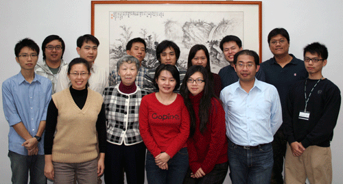

恭賀！張韻詩教授 獲頒第七屆 Linux 黃金企鵝特殊貢獻獎


張韻詩教授(前排左二)，是國際間即時系統數一數二的佼佼者，曾任教於美國伊利諾斯大學計算機科學系達 27 年，出版過 2 本大學教科書，發表超過 150 篇的學術論文，其著作「Real Time Systems」一書，為該領域研究者必讀的重要工具書之一。研究專長為即時系統、嵌入式系統，以及分佈式系統。
張教授 2004 年回台灣後，接受中央研究院的力邀，在資訊科學研究所擔任講座教授。近年來將研究重心放在輔助銀髮族健康生活的智慧型電子設備上，以保障老人獨立生活的品質。其重要成果包括：協助尋找物品的物件定位器、智慧型儲物櫃、智慧型藥盒、以及強化肌肉輔助工具等等。另外，亦帶領自由軟體鑄造場計畫，致力於自由軟體研發專案的推動與扶植，包括建置 OpenFoundry 軟體專案開發管理平台，收納許多嵌入式 Linux 系統相關的自由軟體開發專案，並匯集嵌入式開發所需的專業資源連結列表，讓國內相關領域的開發者得以參考學習。
張教授與其帶領的技術團隊建立了 「OpenFoundry 自由軟體專案開發管理平台」，是一個專門為自由軟體專案開發人員、管理人員以及一般使用者所設置的共同平台，由國人自行研發，可以凝聚大家的力量來協同開發自由軟體。讓國內 Linux 嵌入式專案的開發者，可以透過此一平台來發展與分享其軟體專案，進一步協助國內嵌入式軟體研究計畫及應用產業界，縮短研發時程並加速程式版本升級的速度；另外，張教授所帶領的營運團隊，經年於國內舉辦與 Linux 系統開發相關的座談會與技術教學工作坊，並透過定期發行的電子報，讓更多國人知悉自由軟體的應用推展，以提攜國內自由軟體領域的開發人才；而張教授所帶領的法政團隊，目前已成為國內嵌入式 Linux 系統開發上，授權議題方面不可或缺的重要諮詢單位。舉凡種種，皆彰顯張教授於 Linux 研究推廣上重要的領導地位，經推薦後，審議委員一致認定，足堪獲頒第七屆 Linux 黃金企鵝人才貢獻獎的殊榮。